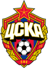

Подробная исторя, как зарождался-Профессиональный Футбольный Клуб ____ ( )____ ЦСКА!
Матчи!/
Всё о ПФК ЦСКА
ЦСКА — российский футбольный клуб из Москвы, в прошлом — часть Центрального спортивного клуба Армии. Один из старейших и самых титулованных[3] клубов в постсоветской истории российского футбола, ведущий свою историю от команды ОЛЛС (Общество любителей лыжного спорта), основанной в 1911 году. Семикратный чемпион СССР[4], пятикратный обладатель Кубка СССР[4], шестикратный чемпион России[4], семикратный обладатель Кубка России[5] и Суперкубка России. Первый российский клуб, выигравший европейский клубный турнир (Кубок УЕФА 2004/05)[4]В 2014 году клуб выиграл чемпионат в пятый раз, и, таким образом, ЦСКА стал первым в российской истории клубом, собравшим оригиналы всех трофеев[6].